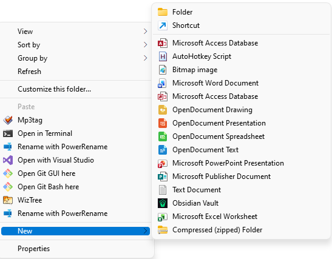
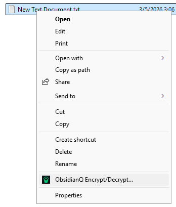
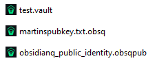
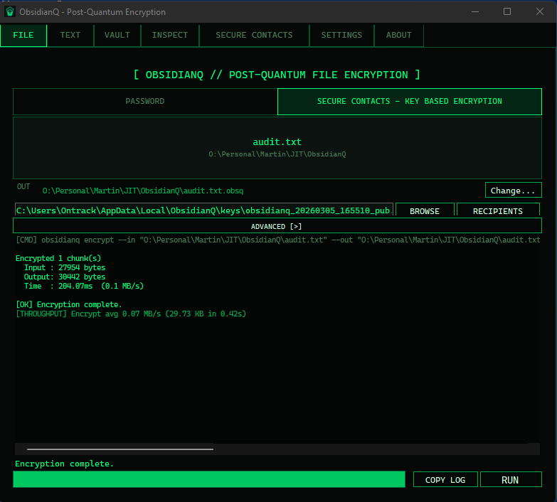
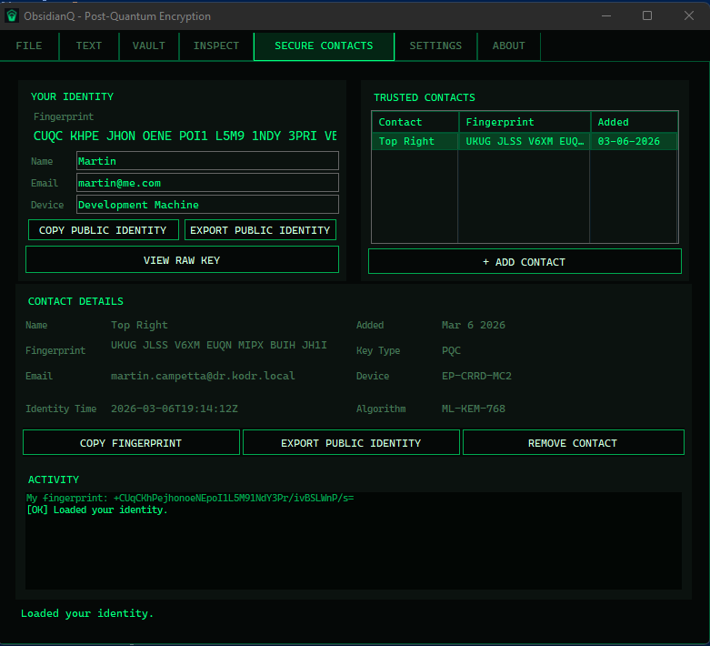
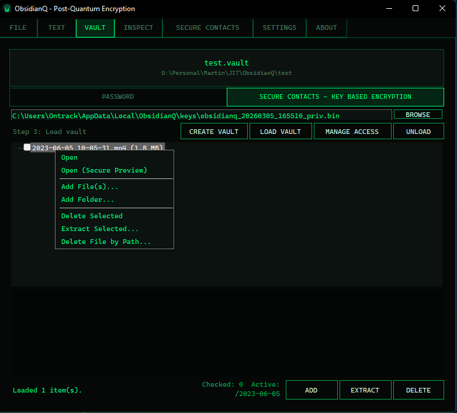
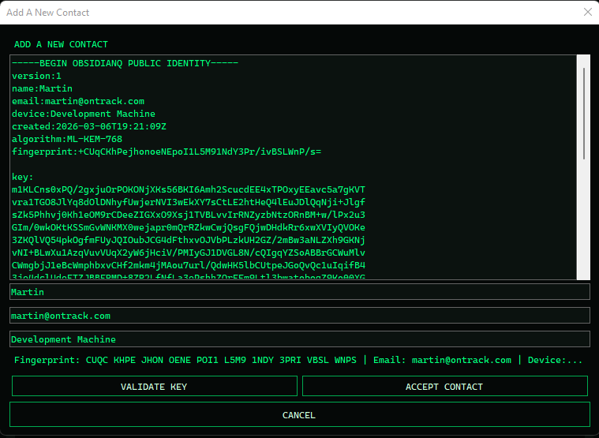
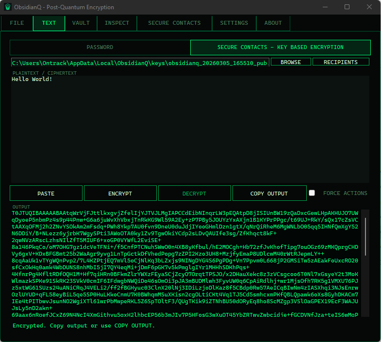
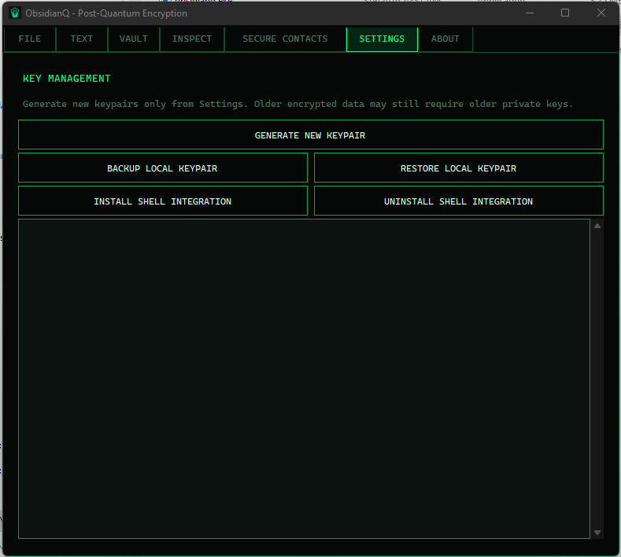

What It Solves
ObsidianQ helps you protect files and text without relying on external cloud key services. It supports both simple password encryption and trusted key-based exchange for teams.
ObsidianQ
ObsidianQ is a local-first encryption toolkit that combines password workflows, Secure Contacts key exchange, and encrypted vault operations in one practical desktop application.
ObsidianQ helps you protect files and text without relying on external cloud key services. It supports both simple password encryption and trusted key-based exchange for teams.
A quick walkthrough of the current build.
Right-click shortcuts for fast encryption workflows from Windows Explorer.

Obsidian Vault">

Latest screenshots from the current build.






ObsidianQ is designed for practical security and transparent workflows. Security claims should always be validated against current release notes and code.
ObsidianQ Version: 1.0
Built for secure, high-performance encryption and post-quantum readiness.
Local-first security | Modern cryptography | Trusted file exchange